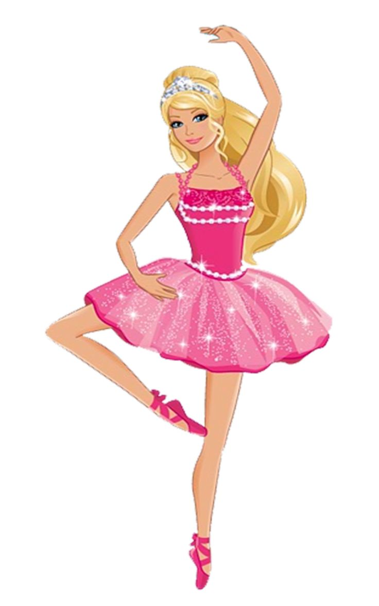
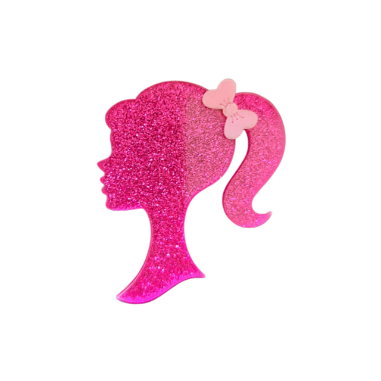
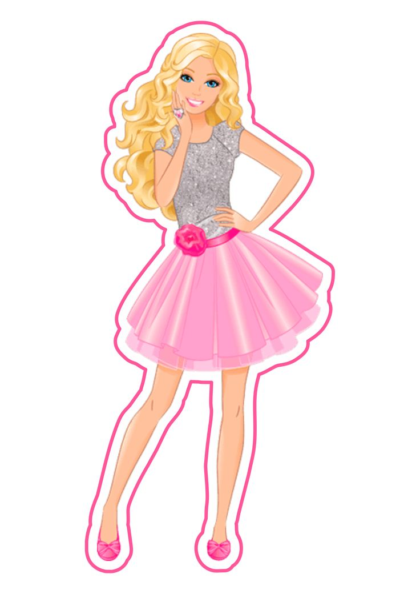

Barbie Girl



O Rosa nunca sai de moda.
Admire o poder do universo feminino.
Seja como uma Barbie.
Criador(a):Ruth Handler
Barbie é uma boneca e personagem fictícia fabricada pela empresa estadunidense de brinquedos Mattel, Inc. e lançada em 9 de março de 1959.
A empresária Ruth Handler é creditada como a criadora da boneca usando uma boneca alemã chamada Bild Lilli como sua inspiração.[1] Barbie é a figura principal de uma marca de bonecas e acessórios da Mattel, incluindo outros membros da família e bonecas colecionáveis. A Barbie tem sido uma parte importante do mercado de bonecas por mais de seis décadas e tem sido objeto de inúmeras controvérsias e ações judiciais, muitas vezes envolvendo paródias da boneca e seu estilo de vida. A Mattel vendeu mais de um bilhão de bonecas Barbie, tornando-se a maior e mais lucrativa linha da empresa.[2]
A primeira boneca Barbie usava um maiô listrado preto e branco, tinha o cabelo preso em um rabo de cavalo, e estava disponível nas versões loira platinada e morena. A boneca foi comercializada como “Modelo de Moda para Adolescentes”, com roupas criadas pela estilista da Mattel Charlotte Johnson. As primeiras bonecas Barbie foram fabricadas no Japão, com suas roupas costuradas à mão por trabalhadores japoneses. Cerca de 350.000 bonecas Barbie foram vendidas durante o primeiro ano de produção.